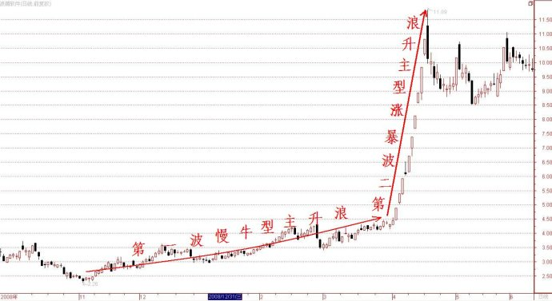
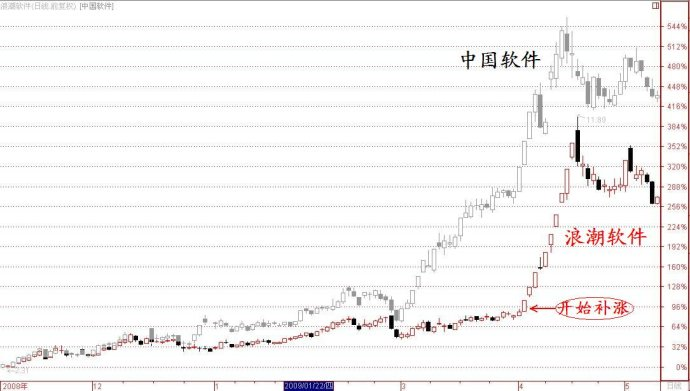

第273篇•教你炒股系列67:主升浪的形态（18）
谷为陵
（4）比价优势股
我常说分析股市要用整体分析法。所谓整体分析法，就是要将基本面、技术面和市场面这三者结合起来分析，从而得出一个整体的认识。基本面和技术面，大家应该比较清楚了，但市场面却不是人人都清楚的。
什么是市场面？简单说，就是市场的炒作行为和方式，其中，比价关系是最重要的内容之一。比价关系是指同板块、同概念的股票之间，存在一个潜在的定价体系，在通常的情况下，这个定价体系是稳定的，但当其中的某些股票因种种原因出现大涨后，就打破了原有定价体系的平衡，造成了体系的不稳定，为了使定价体系得到新的平衡，或者需要那些涨上去的股票再跌回来，或者需要那些没有上涨的股票很快跟涨、补涨上去。
我的话说得可能有些晦涩，但对于股市的短线投机来说，却是真理。短线投机者一定要搞清楚定价体系和比价关系，因为这是对于股票的投机价值进行估值的唯一依据。为了让大家更好地理解，我可以举个例子加以说明。比如，现在市场上的两只黄金龙头股——山东黄金、中金黄金，它们的总市值一个是530亿元，一个是480亿元，相差并不大。这几年来，我们看到的现象是，这两只股票股价运行有极强的趋同性，几乎是同涨同跌的，涨跌幅度也相差无几。不仅是黄金股，那两只稀土龙头股包钢稀土和广昇有色也是如此，总是同涨齐跌。这是为什么？这就是定价体系和比价关系在起作用。
利用定价体系和比价关系可以挖掘黑马股和牛股，其要旨就是发现那些有比价优势的股票，这些股票往往会成为补涨股。补涨股在补涨的时候，其上涨力度有时候也是非常惊人的，一般的，龙头股的涨幅越大，补涨股的涨幅也越大。补涨股在补涨的时候，往往是启动一轮暴涨型主升浪，且在绝大多数情况下是一浪到顶，简单明快，酣畅淋漓。
这类股票并不多见，但却是最好抓的一类黑马或者牛股，赚钱很容易，简直就像白送钱，抓补涨股是我最爱干也最善于干的事。我举一个前慢后快型两波主升浪的比价优势股案例——浪潮软件。这个案例与我上篇博文所讲的中国软件案例正好能够联系在一起。当2009年3～4月，中国软件展开第二波暴涨型主升浪后，股价还处于慢牛阶段的浪潮软件就因比价优势而被激发了，股价出现了一轮暴涨型补涨，股价连续走出9个涨停板。我记得在当时的股市，只有三只股票出现过9个涨停板，其它两只股票是太行水泥和中路股份，可见浪潮软件的补涨行情是多么疯狂。下面是该股的走势图：

不知大家看出来没有，浪潮软件的这两波主升浪是有点与众不同的，因为该股在第一波主升浪完结后，并没有出现一波所谓的2浪调整。若非要找出一个2浪来，那就只能将该股2009年3月初的那两个跌停板以及其后的横盘算成2浪调整了，但总觉有点牵强。所以，我干脆认为该股的两波主升浪是连续的，中间没有出现2浪调整。不知那些波浪大师们该怎样数这个浪。
由于该股是因中国软件暴涨后而出现的补涨，为了让大家能够更直观地看到补涨的情况，我将这两只股票的走势叠加在了一起，如下图所示（我在前面的博文中也曾用过这个图）：

在股市里，只要出现大的市场热点，就会出现涨幅巨大的龙头股，有龙头股就必定会有补涨股。所以，紧跟市场大的热点炒作，就一定会赚到钱，因为市场会给你两次赚钱的机会——一是抓龙头股，若错过了龙头股，还有补涨股等你抓，这是一个相对简单的盈利模式。能抓龙头股的一定是绝顶高手，能抓补涨股的也算是高手，若这两个都不会抓的，我认为炒股水平还没有入门，就需要好好学习一番了。
（未完待续）